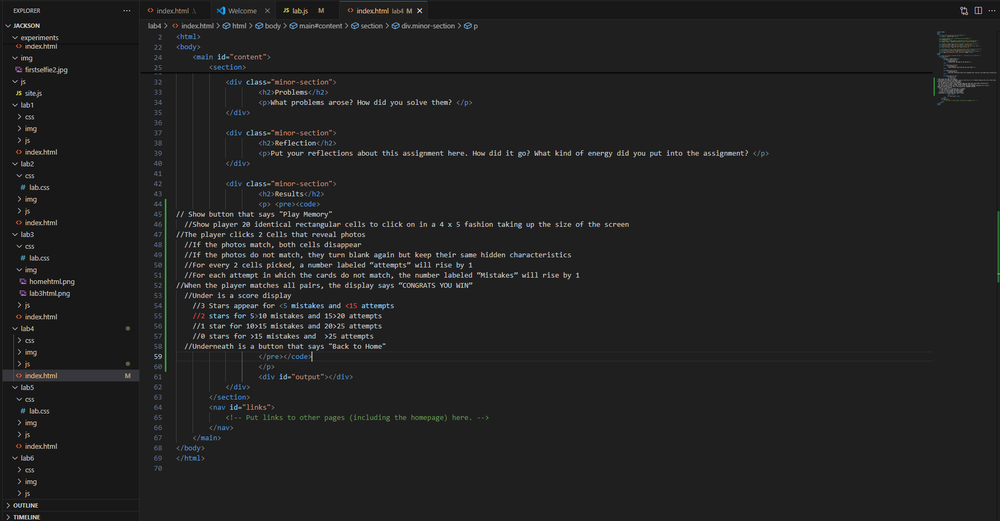

Lab 4 - Pseudocoding and Problem-solving
Challenge
The challenge of this lab was just understanding the point of this exercise and how it was going to help us with Java script. I would just like to know how this is going to translate into a coding process, because this first step was actually quite easy.
Problems
I just don't understand how technical I need to get, and if what I am writing should be cut into smaller or larger chunks. I want to be more in tune with the capabilities of just single lines of code.
Reflection
I enjoyed this assignment for its simplicity, just because we seem to be jumping into some baby steps of java script, since we now have this basic and limited understanding of coding and what the base of it all looks like.
Results
// Show button that says "Play Memory"
//Show player 20 identical rectangular cells to click on in a 4 x 5 fashion taking up the size of the screen
//The player clicks 2 Cells that reveal photos
//If the photos match, both cells disappear
//If the photos do not match, they turn blank again but keep their same hidden characteristics
//For every 2 cells picked, a number labeled “attempts” will rise by 1
//For each attempt in which the cards do not match, the number labeled “Mistakes” will rise by 1
//When the player matches all pairs, the display says “CONGRATS YOU WIN”
//Under is a score display
//3 Stars appear for <5 mistakes and <15 attempts
//2 stars for 5>10 mistakes and 15>20 attempts
//1 star for 10>15 mistakes and 20>25 attempts
//0 stars for >15 mistakes and >25 attempts
//Underneath is a button that says "Back to Home"
This is an image of the source html for this screen that you're on now.
